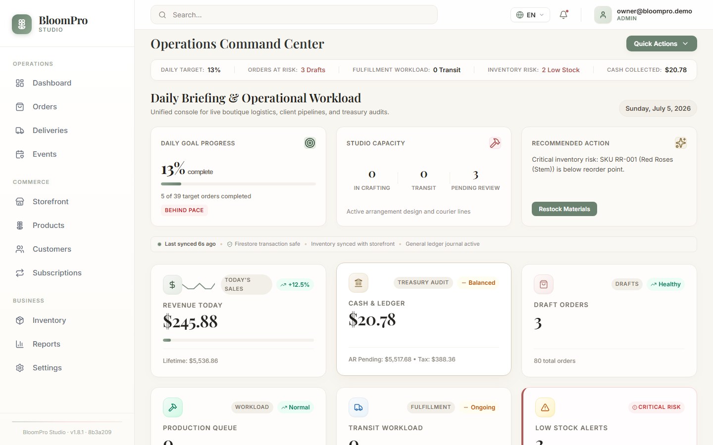
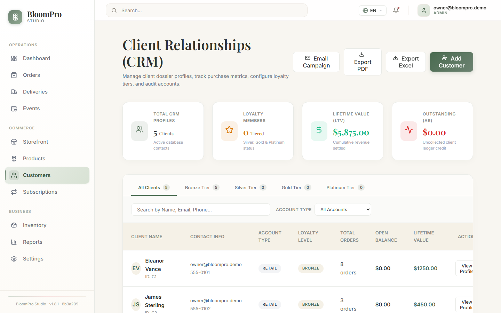
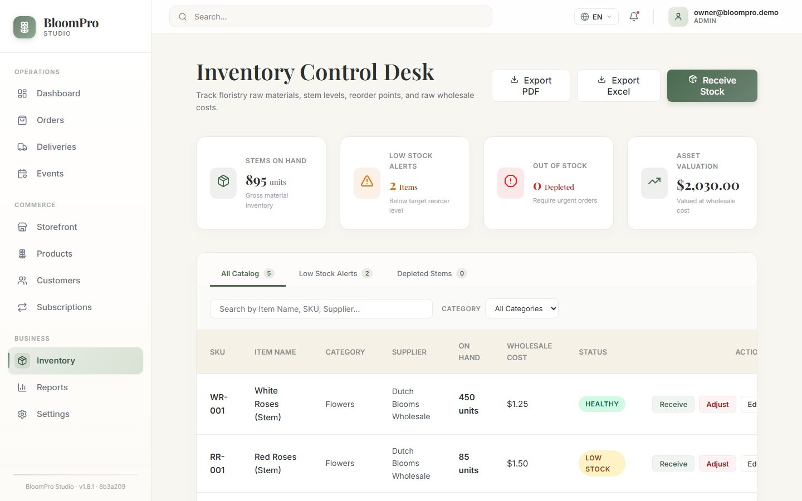
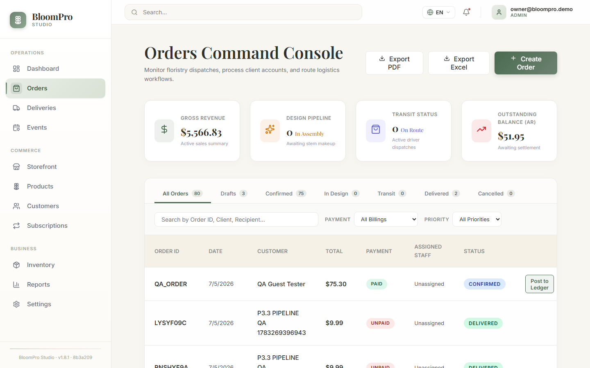
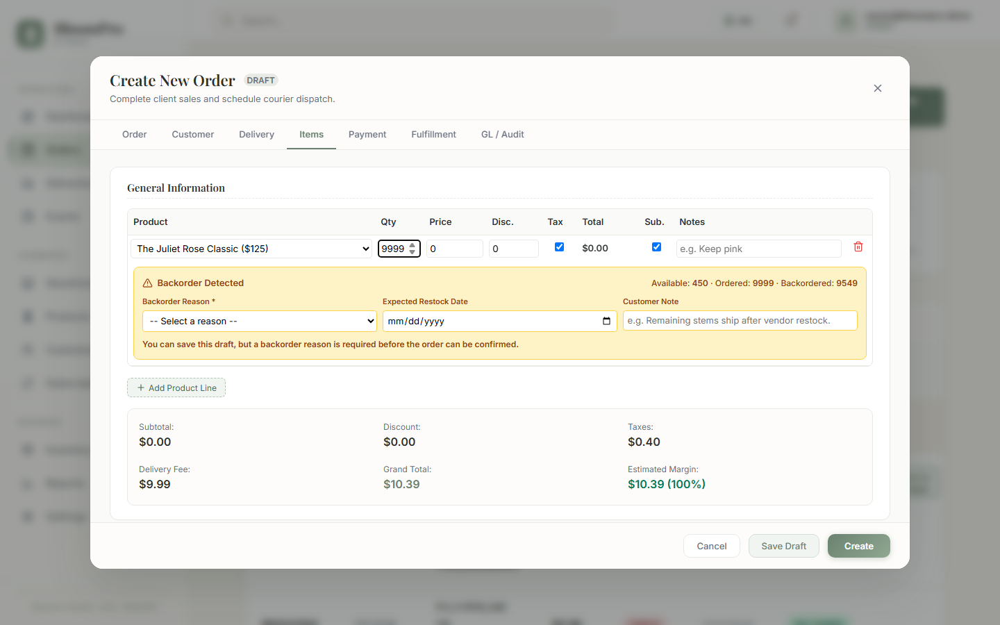

About this handbook
BloomPro Studio
BloomPro Studio is a business operating platform for florists. It connects the work you do every day — customers, orders, design and production, deliveries, payments, purchasing, inventory, and accounting — in one place, so information entered once flows to everywhere it is needed.
© 2026 AF Strategic Technologies LLC. All rights reserved. BloomPro Studio features evolve over time; screenshots and labels in this handbook may vary slightly from the release you are using. Screens also vary by user role, company, branch, language, and permissions. This handbook documents standard product behavior and never describes ways to bypass application security or business controls.
Welcome
Welcome to BloomPro Studio
How the pieces of your florist business fit together.
Every flower shop runs two connected stories at once. The first is the customer story: someone orders an arrangement, your designers create it, a driver delivers it, and the customer pays. The second is the supply story: you buy stems from wholesalers, receive them into inventory, and those costs determine what each arrangement really earns you.
BloomPro Studio keeps both stories in sync automatically. When you confirm an order, deliver an arrangement, or receive a shipment of roses, the platform updates inventory, customer balances, and your books — so your reports reflect what actually happened in the shop.
The customer story
Customer
▼
Order
▼
Production
▼
Delivery
▼
Payment
▼
Accounting & Reporting
The supply story
Purchasing
▼
Receiving
▼
Inventory
▼
Order Cost & Margin
Costs recorded at receiving flow into each delivered order's cost of goods — which is how BloomPro Studio knows your true margins.
Orientation
How to Use This Handbook
Reading conventions used throughout every chapter.
Chapters follow a consistent pattern: an overview, a screen orientation, step-by-step tasks, the business rules that protect your data, and answers to common questions. Skim the panels — they carry the most important knowledge:
TIPA helpful shortcut or a faster way to work.
IMPORTANTBehavior you must understand before acting — usually a business rule the application enforces.
WARNINGAn action with financial or operational consequences that are hard to undo.
ADMIN ONLYA capability available only to Owner or Admin roles in the active company.
BEST PRACTICEA professional florist-business recommendation from real operating experience.
IMPORTANTWhat you see on screen depends on your user role, the active company, your branch, your language, and your permissions. If a control described here is not visible to you, it is usually a permissions difference — not an error. See Chapter 22.
01
GETTING STARTED
Sign in, learn the layout, and find your way around.
Signing in
- Open the BloomPro Studio sign-in page provided by your administrator.
- Enter your email address and password, then select Sign In. Google sign-in is also supported where enabled.
- You arrive on the Dashboard for your active company.
WHAT HAPPENS NEXTBloomPro Studio loads your company membership and permissions. Everything you see from this point — records, menus, actions — belongs to your active company.
The application layout

The BloomPro Studio workspace: sidebar navigation (left), top bar (top), and the working area.
- Sidebar (left) — modules grouped as Operations, Commerce, and Business.
- Search (top bar) — find records from anywhere.
- Language selector (top right) — English, Español, Français, Nederlands.
- Notifications bell (top right) — operational alerts.
- Profile & role badge (top right) — your role in the active company.
| Group | Modules |
|---|
| Operations | Dashboard · Orders · Deliveries · Events |
| Commerce | Storefront · Products · Customers · Subscriptions |
| Business | Inventory · Finance · Receivables · Purchasing · AI Reconciliation · Reports · QA Tools · Settings |
Your first 10 minutes
- Check the role badge (top-right). It shows your role in the active company — this controls what you can do.
- Open Orders and skim today's list so you know what is in flight.
- Open Dashboard → Today's Operations to see production and delivery work for the day.
- Set your language from the top bar if you prefer Spanish, French, or Dutch.
- Find your name under Settings → User Access Control (visible to admins) or ask your administrator what your role allows.
TIPThe sidebar is your map. If you are ever lost, return to Dashboard — it summarizes everything that needs attention today.
02
UNDERSTANDING THE DASHBOARD
Your operational command center for the day.
Overview
The Dashboard answers one question: what needs my attention right now? It combines revenue and pipeline indicators with actionable work queues.
Use this module when…
- You open the shop and want a picture of the day.
- You need to move today's orders through design, dispatch, and delivery quickly.
- Stock is running low and you want to restock without leaving the page.
- A high-priority order needs confirmation or a driver.
Work queues that act
| Panel | What it shows | Actions available |
|---|
| Today's Operations | Today's deliveries, the production queue, and urgent orders | Move an order through production, dispatch, and delivery with Resolve Status; assign drivers |
| Action Required | Low-stock items, unassigned orders, unconfirmed high-priority orders | Restock inventory, assign couriers, confirm orders |
| KPIs | Gross revenue, design pipeline, transit status, outstanding balance (AR) | Reference only — click through to modules for detail |
IMPORTANTDashboard buttons perform real operational updates. When you see a success message, the action has been completed and saved — the order status, inventory quantity, or assignment has genuinely changed. If an action cannot be completed (for example, delivering an order that still has a balance due), BloomPro Studio shows the reason instead of a success message.
BEST PRACTICEStart each morning from Today's Operations. Clear the urgent queue first, then work the production queue in delivery-time order.
03
CUSTOMERS
Create and manage the people and businesses you serve.
Overview
Use this module when… a new customer calls to place an order · a regular updates their phone number or delivery address · you want to review a customer's order history before a call · you are preparing statements or reviewing receivables.

The Customers module: search by name or email (top), Add Customer (top right); each row opens the full customer dossier.
Create a new customer
- Open Customers.
- Select Add Customer.
- Enter the customer's name and email (required), plus phone, addresses, and preferences.
- Review the information and select Create.
WHAT HAPPENS NEXTThe customer dossier is saved and immediately available when creating orders, and their activity begins accumulating for accounts receivable and statements.
Example — Maria Rodriguez's birthday order
Maria Rodriguez calls to order a birthday arrangement for Friday delivery. You create her customer dossier once — name, mobile number, and her sister's delivery address. When you create Friday's order, you enter Maria as the customer; her order joins her history, her payment reduces her balance, and if her company ever runs an account, her statement shows every order and payment in one place.
BEST PRACTICESearch before you create. Duplicate customer records split order history and make statements confusing. One customer, one dossier.
Common questions
Can I delete a customer? Owners and admins can remove a customer dossier. Their historical orders and financial records remain part of your books — deletion removes the dossier, not your accounting history.
04
PRODUCTS
The catalog of arrangements and items you sell.
Overview
A product is something you sell — "Juliet Rose Bouquet," "Seasonal Sympathy Spray." Each product has a name, an SKU (its unique stock code), a price, and a status controlling availability.
IMPORTANTA product is not the same as inventory. The product defines
what you sell and at what price. Inventory tracks
how many units of the underlying stock you actually have. When an order asks for more than inventory can supply, BloomPro Studio flags a backorder (Chapter 08).
Use this module when… adding a new seasonal arrangement · adjusting prices · retiring an item · checking which SKU an arrangement uses.
BEST PRACTICEKeep product prices current. Order lines pick up the product's price at the moment you add the line — stale prices become stale quotes.
05
INVENTORY
What you actually have in the cooler, by SKU.
Overview
Use this module when… checking stock before confirming a big order · reviewing quantities after a delivery from your wholesaler · recording spoiled stems · investigating a shortage warning.

Inventory tracks each SKU's on-hand quantity, cost, and reorder point.
Available, ordered, backordered
When an order line asks for more than you have, BloomPro Studio determines the shortage automatically:
| Available (in inventory) | 12 |
| Ordered (on the order line) | 20 |
| Backordered (shortage) | 8 |
Backordered = Ordered − Available, never less than zero. The quantity is always calculated for you — it cannot be typed by hand.
Chapter 08 covers the full backorder workflow, including the required reason before an order can be confirmed.
WARNINGInventory numbers drive shortage detection, costing, and margins. Recording spoilage late or skipping receiving makes every downstream number wrong.
BEST PRACTICECount your coolers weekly. Small, frequent adjustments beat one painful quarterly correction.
06
ORDERS
Create, edit, duplicate, and manage every sale.
Overview
Orders are the heart of BloomPro Studio. An order carries the customer, recipient and delivery details, product lines with quantities and pricing, payment state, and its position in the fulfillment lifecycle.
Use this module when… taking a phone order · editing quantities before production · duplicating a repeat order · checking a balance · moving an order's status.

The Orders module: pipeline filters across the top (All / Drafts / Confirmed / In Design / Transit / Delivered / Cancelled), search by order, client, or recipient, and Create Order (top right). Each row carries its own status selector and Edit; Post to Ledger appears on unposted orders.
Create an order
- Select Create Order. The order editor opens on the Order tab — set the status (new orders usually start as Draft) and priority.
- On the Customer tab, enter the customer (sender) and the recipient.
- On the Delivery tab, enter the delivery date and address — these are required.
- On the Items tab, add product lines. Pick the product, set the quantity; pricing and the line total fill in automatically. Totals (subtotal, taxes, delivery fee, grand total) recalculate live.
- On the Payment tab, record any amount already paid (a phone deposit, for example).
- Select Create.
WHAT HAPPENS NEXTBloomPro Studio saves the order with a unique order number (BLM-…), posts the sale to your books, and the order appears in the pipeline. If any line is short on stock, the backorder card appears before you save (Chapter 08).
A complete example
Friday, 9:12 AM. Maria Rodriguez orders a birthday arrangement (1 × Juliet Rose Bouquet) delivered to her sister on Friday afternoon, and pays in full by card. You create the order with the delivery address, quantity 1, record the payment for the exact grand total, and set the status to Confirmed. The order number BLM-7A2FQ is now visible to the design team, the sale is on your books, and Maria's balance is zero.
Edit, duplicate, and balances
- Edit — open any order with its Edit button. Changes save when you select Save Changes; the totals recalculate.
- Duplicate Order — from an open order, creates a fresh Draft copy with a new order number and a clean payment state (unpaid, no accounting linkage). The original is untouched. Perfect for weekly corporate arrangements.
- Balance due — grand total minus amount paid. An order cannot be marked Delivered while a balance remains (Chapter 07).
IMPORTANTAmount paid cannot exceed the grand total — the editor will ask you to correct it before saving.
TIPEvery order shows its identifiers consistently: the short order ID in lists, and the BLM- order number your customers can reference.
Common questions
Can I edit a delivered order? You can open it, but its lifecycle is complete — corrections belong in payments, refunds, or reversals (Chapters 11 and 17) so history stays truthful.
Why did my save not go through? Check each tab for a highlighted field — required information (customer name, recipient, delivery address and date) or a payment rule may need attention. The editor jumps to the tab that needs you.
07
THE ORDER LIFECYCLE
Every status, what it means, and the guards between them.
DRAFT
Being written up — quote stage. Backorder reasons optional here.
▼
CONFIRMED
A real commitment. Shortage reasons must be documented.
▼
SCHEDULED
Planned into a production day.
▼
IN DESIGN
A designer is building the arrangement.
▼
READY
Finished, in the cooler, awaiting dispatch.
▼
OUT FOR DELIVERY
With a driver.
▼
DELIVERED
Complete. Delivery time is stamped and the cost of goods is recorded.
Alternate endings
CANCELLED
Order will not happen. If it was already on the books, BloomPro Studio records a correcting reversal automatically.
REFUNDED
Only a delivered order can be refunded.
IMPORTANTLifecycle guards protect you. BloomPro Studio blocks transitions when required conditions are not met, and tells you why:
- Delivered requires a zero balance due.
- Delivered orders cannot be cancelled — use a refund.
- Refunded requires the order to be delivered first.
- Cancelled / Refunded are final — no further status changes.
- Leaving Draft requires a documented reason on every backordered line.
WARNINGCancelling a confirmed order is a financial event: the original sale on your books is reversed with a correcting entry. The history of both remains visible — by design.
Why can't I mark this order as Delivered?
Check, in order: 1) the remaining customer balance — it must be zero; 2) the current status — cancelled/refunded orders are final; 3) required delivery information. The message shown when the change is blocked names the exact rule.
08
BACKORDERS & PRODUCT SHORTAGES
What happens when a customer orders more than you have.
How detection works
While you build an order, BloomPro Studio compares each line's ordered quantity against the available inventory for that product's SKU. The moment ordered exceeds available, an amber Backorder Detected card appears directly under that line:

The backorder card, live in the order editor: the Available · Ordered · Backordered figures (top right of the card), the Backorder Reason selector (required to confirm), Expected Restock Date, and the customer-facing note.
| Field | Meaning |
|---|
| Available | Stock on hand for the line's SKU right now |
| Ordered | The quantity on this order line |
| Backordered | The shortage — calculated automatically, never typed |
| Reason (required to confirm) | Why the shortage exists — see the list below |
| Expected Restock Date | When you expect to fulfill the remainder |
| Customer Note | Customer-facing explanation, e.g. "8 stems ship after vendor restock" |
Backorder reasons
Vendor shipment delay · Seasonal product shortage · Supplier out of stock · Partial inventory available · Special-order item · Quality hold / damaged stock · Awaiting purchase order receipt · Other (requires a written detail).
The rules
- Drafts are forgiving. You may save a draft while shortage information is incomplete — the card shows a gentle reminder.
- Confirmation is strict. Moving the order beyond Draft requires a reason on every backordered line. Choosing Other requires the detail text.
- Each line stands alone. Two short lines need two reasons.
- Resolved means clean. Reduce the quantity to within stock and the card — along with the stale reason, date, and note — is removed from the order.
WARNING — Why can't I confirm this order?If confirming is blocked with a message about backordered items, one or more short lines are missing a reason (or "Other" is missing its detail). The editor jumps to the Items tab — complete the amber card and save again. This is the shortage-documentation rule working as intended.
BEST PRACTICEConfirm quantities against inventory before confirming an order. A shortage caught at the counter is a phone call; a shortage caught in production is an apology.
Example — the Grand Hotel gala
The Grand Hotel orders 20 Premium Red Rose boxes; you have 12. The card shows Available 12 · Ordered 20 · Backordered 8. You select Vendor shipment delay, set Tuesday as the expected restock, and note "8 boxes follow after our Tuesday delivery." The order confirms cleanly, production starts on the 12, and everyone — including the customer — knows the plan for the 8.